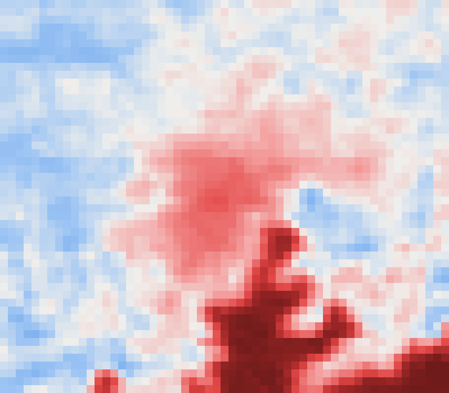
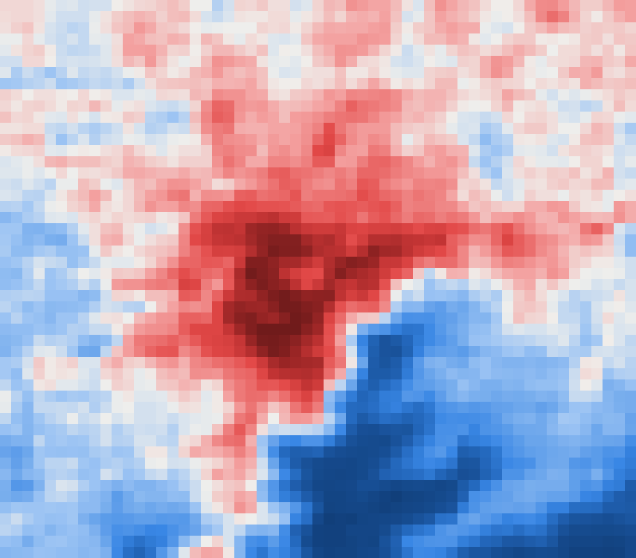

Day vs night
Surface temperature over greater Kampala in the 2025 dry season, from the same sensor (MODIS Aqua, 1 km): about 13:30 against about 01:30. Each map is shown relative to its own median, blue cooler and red warmer. Drag the handle.


By day, the lake and wetlands are cool and the built-up core is hot. By night, the lake is the warmest surface and the dense core stays warmer than the hills around it. The night heat is what keeps people in single-room houses from cooling down.